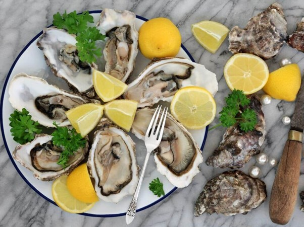
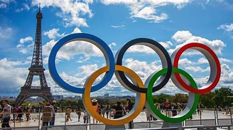
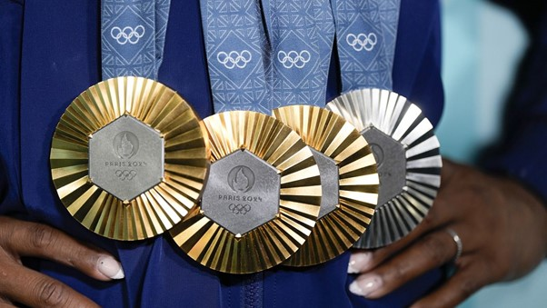
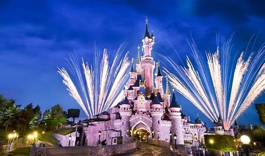
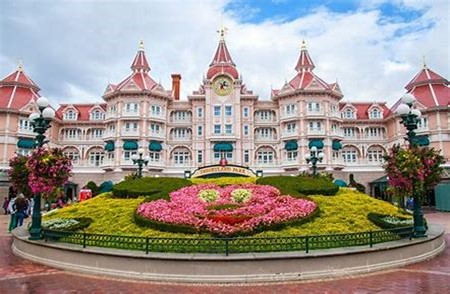
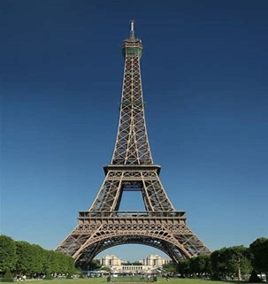
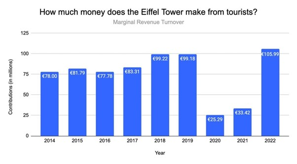

Arrival in Paris - The City of Lights
I arrived at Paris the city of lights I landed at the Charles de Gaulle or Orly Airport where there was clear vision that the hospitality industry in France is very good. I started my journey on the historic ile de la cite, here i found the famous Notre-Dame Cathedral. It was under restoration, but one can still admire its beauty and then I explored the nearly by landmarks like the Eiffel tower, louvre museum and arc de triomphe. Another place to visit is Sainte-Chapelle which is just a short walk away, it is known for its magnificent stained-glass windows that create a kaleidoscope of colours.

Tourism and Hospitality Statistics
Tourism and Hospitality statistics: According to statistics France is ranking as one of the world’s top tourist destinations consistently. Frace accommodates hundred million international tourists annually, this contributing to the economic vitality of the hospitality industry. The year that saw the highest number of international tourists was in 2019 which accounts for 90.9 million people. Disneyland in Paris is the most visited attraction which accounted for fourteen million yearly visitors. France’s travel and tourism market size shows huge potentials of increment and is expected to reach $20.03 billion in 2024. Economic Contribution: The hospitality industry, which includes hotels, restaurants, resorts, travel services, and events, accounts for around 8% of France’s GDP and employs millions across urban and rural regions. The most famous attractions like the Eiffel tower, the Louvre, and destinations such as Provence, the French Riviera, and wine regions draw tourists globally this has helped in enhancing the country’s hospitality landscape. Hotels contribute to the largest proportion of France’s travel and tourism market, with a market volume of $10.69 billion in 2024.
(Piva, 2024)

Major Sectors within France's Hospitality Industry
Accommodation
I will also be telling about the major sectors within the hospitality industry in Farnce. Accommodation in France First sector is Accommodation that refers to budget hotels, hostels and chateaux this contributes majorly to the revenue. France also has luxury hotels such as Le Boutique Hotel & Spa is a boutique. Le Boutique Hotel & Spa is a boutique is a five star hotel that offers history of the country, heritage, comfort and luxury all under one roof. One will appreciate and be mesmerised by the high ceilings and tall windows of the magnificent rooms. Each room has a unique design, but one will also find wooden parquet flooring in the bedroom area and Pyrenean slate in the bathrooms. Each room has unique decor that’s complemented by unique artwork, all of which have been personally selected by the owners. And those owners aren’t some large corporations, but a father and daughter team named Christophe and Anais who simply fell in love with the property and then converted it into their dream boutique hotel
(intelligence, 2024)


Food in France
France is well known for its cuisine and French food such as baguettes, croissants and cheese. when I went to France, is that food is an experience to savour, not something you do quickly. Each region in France is well known for its own distinct culinary traditions and specialities that are widely influenced by its geography and history. The gastronomy is world-renowned, with restaurants, cafes, and patisseries playing a crucial role in both urban and rural settings. Michelin-star restaurants highlight the prestige, while small eateries and cafes showcase regional delicacies. In 2010, UNESCO created Intangible Cultural Heritage , a list that recognises knowledge, cultural practices and traditions instead of physical sites. The gastronomic meal of French was added to this list the name of the list is ‘Le repass gastronomique des Français ‘. This recognition was because the French cuisine is considered as a social custom that celebrates togetherness, pressurises on pleasure of taste and maintains the balance between humans and the products of the nature. The ritual of eating in France includes things like setting the table, selection of dishes and matching the wine with food and the special emphasis on sharing and enjoying meals together. Oysters are a very popular food in France, especially during the Christmas season. This popularity comes from King Henri IV, reigning from 1553 to 1610, reportedly consumed up to 300 oysters in a single sitting. And Louis XIV had them delivered daily to Versailles. The famous American Chef and author by the name Julia Child taught the American housewife how to cook French food. I was very lucky to eat at the very restaurant, La Couronne, where Julia ate and they still serve the same menu thus preserving history.
(Lang, 2023)
Guided Tours and Events
The next sector of hospitality industry is tourism and travel services, this sector contributes from guided tours, historical sites and museums make up the key part of income. the tourism sector is well complimented by robust transportation network connecting various regions. Another sector that contributes to hospitality is events and conferences such as Olympics in the year 2024, Cannes film festival, and tour de France. all this attracts visitors and thus boost the occupancy rates and support local economies. All the sectors mentioned above are interconnected with each other. For instance, the Cannes film festival invites various famous celebrities from all over the world this contributes to sector of accommodation and food.
(Coyle, 2024) (intelligence, 2024)
Cannes - World Capital of Cinema
Cannes is known as the world capital of cinema and partner of the Festival de Cannes, hosts the most famous movie stars since 1946. This prestigious event, the City of Cannes offers the organization the Palais des festivals et des congrès and public spaces. The Cannes festival in today’s world is one of the most prestigious films gathering, it is also known as the most publicised cultural event. Presently it is a major forum for film production countries. the Festival de Cannes takes over the city and tabloids worldwide in the month of May of each year, Professionals in the cinema industry, international stars and up-and-coming actors rub shoulders with the crowd looking for surprising pictures and encounters.
(Podrabinek, 2023)


2024 Olympics
The Olympics in 2024 has also contributed to the France economy in a similar way by increasing the attract tourists from both domestic and overseas markets thus contributing to the economy. The French Centre for sports law and economics studied that this years Olympics. Olympics is the world leading sporting event. It features both summer and winter sports competition and accommodate athletes from all over the world. These games are considering world famous sports with more than 200 teams. they take place every four years and France hoisted the Olympics in 2024.The creation of this sport was inspired by ancient Olympics games that were held in Olympia in Greece in the 8th century. Baron Pierre de Coubertin founded the International Olympic Committee (IOC) in 1894, leading to the first modern Games in Athens in 1896. The 2024 Summer Olympics provided an important opportunity for the host nation, France, as the events attract tourists from both domestic and overseas markets. generate at up to €10.7 billion and up to 247,000 jobs. Of the €10.7 billion, approximately €1.4-€3.5 billion (13-33%) is contributed to tourism-related economic impact. Research shows that the Olympics that were help in France this year has widely contributed to the countries economy due to the large entry or visit of visitors and increased spending of these visitors in hospitality sectors such as hotels, restaurants, on food, and museums. According to the Tourism Minister of France, Olivia Grégoire a comparison study showed that the spendings on hotels in the cities where the event was hosted was sixteen percent higher than previous years. while tourism-related sales at museums and restaurants saw a 25% increase year-on-year, Gregoire told French paper La Tribune Dimanche. The Banque de France anticipates economic growth between 0.35% and 0.45% for the third quarter of the event, compared to a 0.3% increase in the first two quarters of the event. This study shows that up to 0.25% of the growth could be given to the Olympics, with the economic benefits largely because of the ticket sales and TV rights.
(Parkins, 2024) (Teng, 2024).



Disneyland Paris
Disney land in Paris is a resort that has a main aim of entertainment. It widely attracts kids. It is located in Marne-la-Vallée, in France that is thirty two kilometres east of Paris city. It has two theme parks, seven Disney owned hotels and two convention centres, a golf course, an arena and a shopping, dinning and entertainment complex. Disneyland Paris is Europe’s leading tourist destination it accommodates more then two hundred and fifty million visits since it has opened in 1992 and over 14500 cats members working online. Studies has shown that Disneyland activities support an annual of 55000 direct , indirect and induced jobs in France. It also generates nearly 20000 jobs in the Seine-et-Marne area over the last twenty years. Disneyland Paris is considered the leading employer in the Ile-de-France region, and the largest private employer in Seine-et-Marne. Disneyland Paris is one of the Europeans leading tourist destination, with more than 250 million visits since its opening in 1992, and over 14,500 Cast Members working on the site. Its employees perform more than 500 different roles, positions and professions, representing more than 100 nationalities and speaking 20 languages.
(departement, n.d.)


The Eiffel Tower
The Eiffel Tower is known as “La Tour Eiffel” in French, it is a wrought-iron lattice tower. It is one of the most recognisable landmarks in the world and depicts as a symbol of French architectural and engineering achievement.The Eiffel tower is one of the most famous monuments in the world. a symbol of France and it is in the city of lights. The Eiffel tower attracts nearly six to seven million people every year with international visitors making seventy five percent of the total. In 2023, the Eiffel Tower attracted 6.3 million tourists, reflecting an 8% rise compared to 6.19 million visitors in 2022 and slightly exceeding the pre-COVID visitation figure of 6.2 million in 2019. IN 2024 the Eiffel tower played a significant role during the Olympics that was hosted in Paris. It served as a backdrop for spectacular light show and events during the events. The Eiffel tower was showcased as a global symbol of celebration and unity. In 2022 The Eiffel Tower recorded a historic low of 1.6 million visitors in 2020 due to covid 19, a 75% decrease from the previous year. This was due to the COVID-19 pandemic on the restrictions on travelling.
(ginius, 2024)
Impact of Hospitality on France's Economy
Hospitality significantly impacts job creation across hotels, restaurants, and tours. Seasonal events boost employment, with the hospitality industry blending cultural warmth and excellent service.
(G., 1984)
Challenges Facing the Hospitality Industry
The industry faces challenges like high labor costs, environmental sustainability demands, and the necessity of technological adaptation, especially in response to eco-friendly and digital trends.
(AdminTHDM, 2016; Hollander, 2023)